一：旅途中快速自制应急小茶方
在旅途中，身体容易出现各种平时没有的意外状况。这个时候身边可能没有携带相应的小茶包。此时不用慌张，正如家里的厨房是我们平时的“小药房”，在旅行中，随处可见的餐厅就是我们应急的“小药房”。
后面的应急小茶方，采用的都是餐厅常用的茶饮和调料原料。我们在用餐时，就可以顺便解决身体的突发小状况。
旅途中吃生冷后突然腹泻，喝姜丝绿茶
有的人一出门就便秘，但也有相反的人，在旅途中不敢吃生冷食物，一吃就拉肚子，而且是急性的，大便很稀，像水一样。
这种腹泻，可以喝姜丝绿茶调理。常有这种现象的人，也可以在吃饭时喝一杯来预防。
姜丝绿茶
【原料】
生姜或泡姜半块、绿茶10克。
【做法】
- 把泡姜切成丝，或是把生姜清洗干净，带皮切成丝。
- 姜丝和绿茶放在一起，沸水冲泡，闷3分钟后饮用。
【功效】
- 调理寒湿水泻、急性肠炎。
- 清肠毒，祛湿。
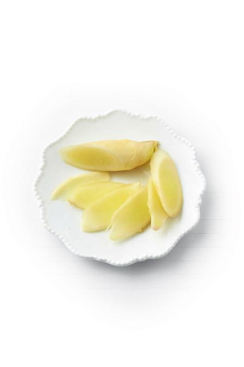
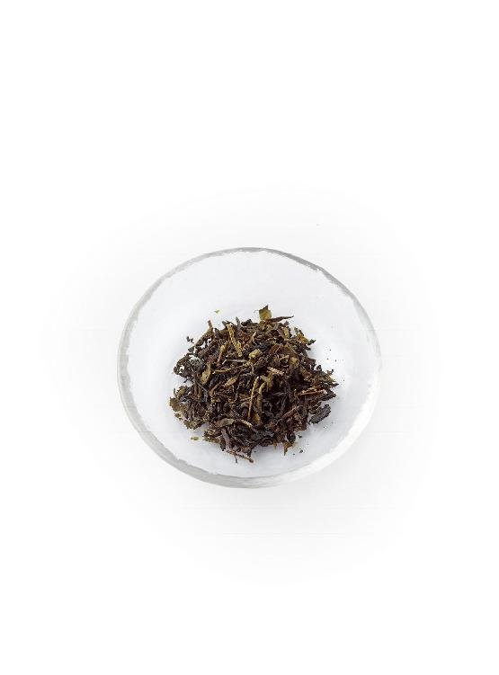
- 旅途中遇到这种腹泻，只要在就餐时点一壶绿茶，再点一盘泡姜，就可以自制这款茶饮了。如果餐馆没有泡姜，就请他们切点姜丝。
- 记住提醒服务员：生姜最好带皮。泡姜经过腌制，发散的功效没有生姜强，不带皮也没有关系。
- 姜丝绿茶简直好用到不要不要的，我和老妈都是受益者，只要是受寒后腹泻，喝了见效特别快，还很舒服呢！
——ggsinging
- 姜丝绿茶，针对受寒腹泻很管用，每次我都是喝一剂就见效。
——雪天
- 偶尔在外边吃，一旦吃得不合适，喝两杯姜丝绿茶就管用！
——百合
- 我早上起来拉肚子，就泡姜丝绿茶来喝，下午就不拉了，很有效又不伤身体。
——粉红@期望
- 一次出差在广州，拉肚子很难受。突然想起陈老师的姜丝绿茶，急忙到楼下餐厅要了一些姜片，接着到超市买了绿茶，用开水冲一杯暖暖的姜丝绿茶，肚子咕噜咕噜叫，顿时感觉又活过来啦。大爱陈老师的贴心小茶方！
——亲
- 印象最深的是一次吃凉东西导致腹泻。平时我都硬挺着，但是去了五次厕所后终于坚持不住了，马上找出绿茶，切了姜丝，冲好，热热地喝了一杯之后真的就没再拉肚子了，立竿见影！
——秋日的私语
- 我有几次肠鸣、排气，立马泡一杯姜丝绿茶，喝一杯就好了。自己都忘记肚子不舒服这件事了！
——观心自在
- 上周末，我上吐下泻，清水便，拉得我都虚脱了。想到了姜丝绿茶，赶紧冲泡喝下去，一会儿就止住了。大爱老师！以往这样一定要去医院打吊瓶的。
——碧水蓝天
- 姜丝绿茶治拉肚子真的很管用！我可能最近吃得有点杂，昨天下午肚子疼，拉肚子，一杯姜丝绿茶喝下去，肚子就不咕咕乱叫，舒服了。一杯茶治好拉肚子真的很神奇。
——18群读者
- 昨天早上儿子骑车上学，刚到学校就拉肚子，一早上拉了四次水状的，肚子疼，还咕噜响，回家还拉了两次。我就用10克绿茶，生姜切丝，用保温杯闷了3分钟，他喝完一杯后，没再拉了。下午又喝了一杯，晚上9点拉了一次，已经不再是稀的了，今早起来再拉的已经成形了！
——8群读者
如果受寒引起下腹突然疼痛，用茴香盐袋热敷就会好点。如果在旅途中，找一家餐厅，要一小把小茴香和少许盐。马上泡杯怀香止痛茶，就能缓解症状。
小茴香能理气，凡是身体的下半部分出现寒湿、气滞、疼痛的情况，比如痛经、腰痛、肠痉挛、遗尿等，都可以用它调理。
怀香止痛茶
【原料】
做菜用的调料小茴香（古人称“怀香”）1勺、盐少许。
【做法】
- 把小茴香放入随身杯，冲入沸水，加入盐。
- 闷制20分钟后饮用，可以反复冲泡。
【功效】
- 调理受寒引起的下腹疼痛。
- 散寒、暖胃、理气、止痛。
有条件的话，用小茴香和盐煮水，效果更好。
- （老师的茶包小偏方）用过的都好！昨天有些腹痛腹泻，姜丝绿茶和茴香盐一泡就好了。
——柚子树
- 茴香盐水治受寒胃痛，一杯水下肚，立刻暖暖的。
——百灵鸟
- 半月前我曾肚子胀气，剧痛，热敷茴香盐包4个小时就恢复正常了。娃爸昨天吃了何香肚（陈老师的何香猪肚汤方）后腹泻三次。记得老师说过，吃何香肚腹泻的话，小茴香要加量。晚上到家煮了小茴香盐水给娃爸，今早肚子就不疼了。
——瑞丽
你是否有过这样的经历：平时在家好好的，一出门旅行就发现大便不那么畅通了。这是由于旅途中饮食不规律造成的。
很多人都有类似的困扰。如果出门时间长了，更是难受。这种时候，我的家人常用一个简单的小法子来应急。
外出吃饭的时候，点一壶菊花茶，再请服务员到厨房取一小碗面粉，就可以在2分钟内自制一款快速通便的茶饮。
面粉可以帮助排出肠道内的毒素，它有双向调节的作用。生的面粉冲水喝，有利肠通便的功效。而将面粉炒黄以后冲水喝，则可以调理腹泻。
利肠生面茶
【原料】
面粉30克、菊花茶半杯。
【做法】
- 将面粉放入杯中，慢慢地倒入半杯温热的菊花茶。茶的温度不要太高，温的就可以。
- 边倒水边用筷子将面粉和水搅拌均匀，使其变成稀糊状。
- 将面茶一次喝完。喝一两次就能见效。
- 可以在菊花茶里加适量蜂蜜，溶化后，再用来调面茶，口感更好。
【功效】
- 缓解旅途中大便干燥引起的便秘。
- 清肠热，排肠毒。
- 消除便秘引起的口腔异味。
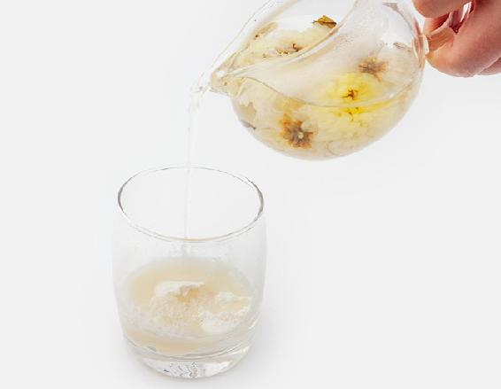
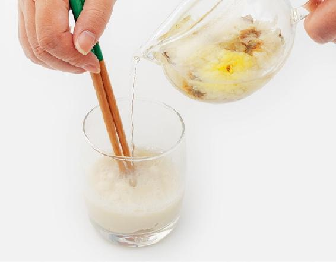
排便困难但大便不干燥反而稀软的人，以及长期便秘的人不适合饮此茶。
读者评论
有次出差，换了新环境，几天没有上大号，试了利肠生面茶，效果很好。
——Mary
面粉，做成面食是食物，而生吃则是一味药。这是我家秘传的一个方法，生面粉可以止鼻血。
有的人旅行中由于不适应干燥的气候，会突然流鼻血，这个时候不用慌张，马上找一家餐厅，要一些生面粉，就可以随手泡一杯止鼻血的茶饮。
面粉按传统的等级分为标准粉和富强粉。富强粉是精制过的，做出来的面食很白；标准粉做出来的面食没有那么白，所以价格也便宜。但我更喜欢标准粉，因为它保留的营养素稍多一些。有条件的话，最好用全麦粉，也就是含有麸皮的面粉，这样的面粉营养更全面，做茶饮效果也最好。
生面茶
【原料】
生面粉1/3杯、凉开水大半杯。
【做法】
- 将面粉放入杯中，一边倒凉开水，一边用筷子将面粉和水搅拌均匀，使其变成稀糊状。
- 将面茶一次喝完。
【功效】
- 调理内热引起的鼻出血。
- 通便。
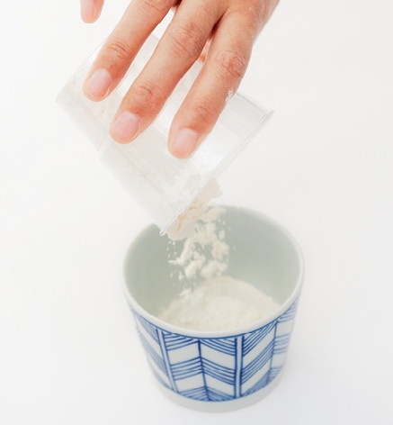
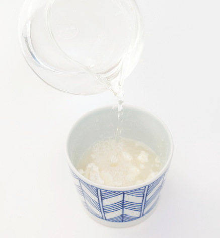
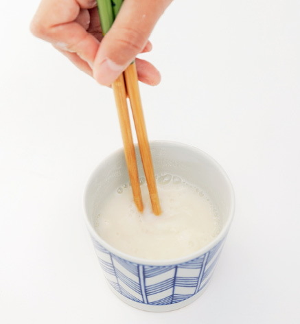
在大理参加陈老师的养生营，高原太干燥了，好几个人天天流鼻血。陈老师知道以后，让每个人喝了一杯生面茶，好神奇呀，当天晚上就不流鼻血了。
——雯雯
旅途中如果突然感觉嗓子发干、有点疼，想咳嗽，声音也有些沙哑，可能是咽炎发作了。在绿茶里面加入蜂蜜来喝，可以缓解这种不适。
蜂蜜绿茶
【原料】
绿茶、蜂蜜（槐花蜜最佳）。
【做法】
- 泡一杯浓一点的绿茶，晾温后加2勺蜂蜜搅匀。
- 每隔十几分钟喝一小口，尽量让茶水在咽喉处多停留一会儿，时刻保持嗓子的滋润。
- 大约一天，咽炎的症状就可以缓解了。
【功效】
缓解咽喉疼痛。
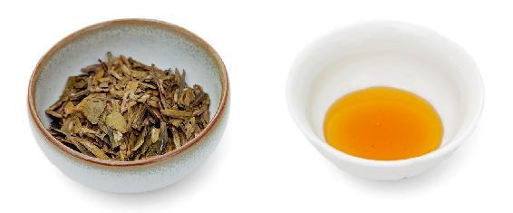
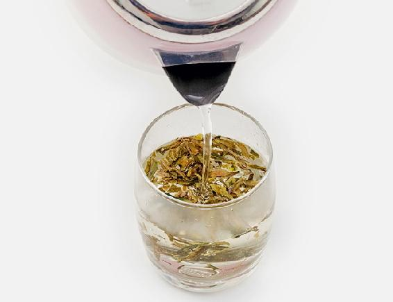
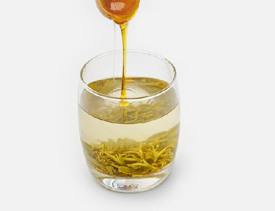
- 绿茶要泡得浓浓的，目的是加强清热去火的作用。
- 适合咽炎急性发作者（嗓子干疼、想咳嗽、声音嘶哑）。
- 爱抽烟的人，长期患有慢性咽炎的人，平时喝茶的时候也可以加些蜂蜜，这对咽喉有保护的作用。
- 按陈老师说的，绿茶蜂蜜水喝了两天嗓子好多了。感谢陈老师，感恩遇见你。
——大连小威
- 连续三天晚上睡觉咽口水时嗓子疼，昨天晚上3点多疼得睡不着，索性起来泡了杯浓浓的绿茶，又加了2大勺蜂蜜，按照老师的说法慢慢地喝了。回到床上躺着，不到半个小时咽口水嗓子就不疼了。真是太好了！
——14群读者
- 喝绿茶蜂蜜水，后又加了陈皮，感觉咽喉舒服多了，晚上睡觉也没有那么干痒了！
——29群读者
- 我的咽炎一直很严重，采用打消炎针、雾化、中药等各种方法都不见效，看了允斌老师的蜂蜜绿茶，尝试着喝了三天，嗓子明显感到轻松。小方法治大病！
——阳光地带
- 蜂蜜绿茶真的好！嗓子疼已经有十来天了，一直喝中药，还在喝鱼腥草。昨晚突然嗓子很痛，吃了消炎药和抗病毒的药睡了。凌晨4点多再次被痛醒，吞咽的时候嗓子很疼，无法入睡，于是起床熬了鱼腥草茶，还泡了杯蜂蜜绿茶，按老师的方法慢慢咽下，仅几分钟嗓子疼就得到缓解，然后美美地睡了一觉。刚醒来，发现嗓子好多了，吞咽还有一点儿疼。今天继续喝蜂蜜绿茶和鱼腥草罗汉果水。
——29群读者
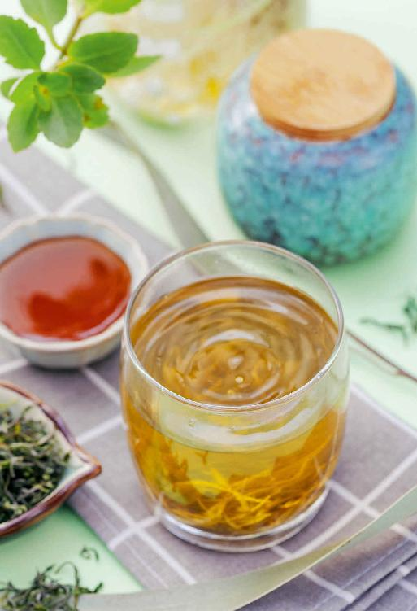
平时牙不痛，出外旅行突然牙痛，一般来说属于虚火牙痛。
虚火牙痛往往没有实火牙痛那么厉害，就是觉得牙根那儿隐隐作痛，红肿也不严重。
虚火牙痛是受寒凉引起的。坐车、坐飞机，人很容易受寒，抵抗力下降，有的人会长痘，有的人就会牙痛。
我家有一个小秘方，对虚火牙痛特别管用，就是胡椒粉煮鸡蛋。
在旅途中不方便煮，可以把这个方子变化为简易的归原止痛茶。任何餐厅都能找到这两样原料。
归原止痛茶
【原料】
胡椒粉1小勺、生鸡蛋1个。
【做法】
- 把鸡蛋打散，放入胡椒粉，搅匀。
- 冲入沸水，一边冲一边搅拌，把鸡蛋冲熟。
【功效】
- 调理受寒引起的虚火牙痛。
- 引火归原。
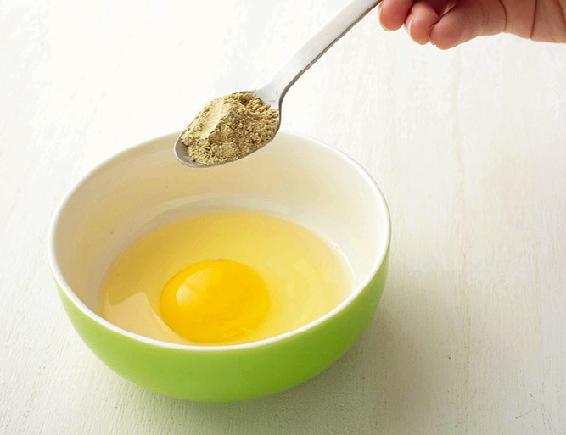
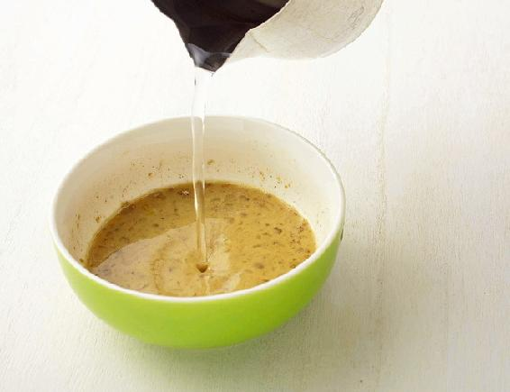
读者评论
- 每次牙痛，只要喝两次就好了！《茶包小偏方，喝出大健康》这本书很实用，物超所值，值得珍藏！
——秋水伊人
- 胡椒粉煮鸡蛋这个茶方太有效果了，早上喝一次，到了晚上牙就不疼了，我试了好多次。
——和风细雨
- 有天听我老父亲嘟囔一句牙疼，我问了症状判断是虚火导致的，第二天早上就用胡椒粉煮鸡蛋做给他吃，本想隔天早上再做点，可当天晚间他说牙疼已经好了！看来我们平时正确判断问题很重要，只要对症，老师的方子就是灵丹妙药！从那次以后我老父亲不像从前那样抵触顺时饮食了！只要是顺时饮食，给他吃啥他都吃！
——暄
- 晚上喝了归原止痛茶，第二天早上起床牙龈肿痛就消失了。
——紫苏
- 归原止痛茶，我妈妈喝了两次就好了。以前牙疼一发作就要好久，很痛苦，现在很快就好。
——澜羽
- 牙龈疼、身上冷，判断是虚火。我煮了胡椒粉鸡蛋，吃完不疼了。
——培培
- 一位同事牙疼，我判断是虚火，让她用胡椒粉煮鸡蛋，一开始她不相信我，可是过了一个星期都没好。于是按照我的方法做了胡椒粉煮鸡蛋，吃了一次就有效果。
——cailyn
- 我是前天晚上感到牙龈肿痛，也没管它，昨天以为多喝水就会好，结果昨天下班的时候严重到嗓子都痛了，半边脸都肿了。回到家赶紧用胡椒煮鸡蛋来吃，晚上睡觉时就感觉好点了。今天早上又煮了一个吃，现在嗓子不痛了，牙龈也好很多了。
——9群读者
- 感觉有点虚火，牙龈肿，喝完胡椒蛋很对症，立马不疼了。
——23群读者
- 下午牙又痛，马上喝了一碗胡椒粉冲鸡蛋，现在已经好多了。
——暖暖
- 前天下午公公回来牙疼得厉害，哪哪都不合他意，凶着脸！我突然想到老师说的虚火牙疼，可以用“生鸡蛋胡椒粉”，开水冲熟就能缓解。我立马行动，先冲一碗，让他喝了。之后我就去忙着辅导宝贝了。后来看到公公有说有笑的，问他感觉怎么样，他说好很多，基本不疼了！
——27群读者
- 昨晚10点钟左右，觉得牙龈肿痛。这段时间太忙并熬夜，肯定是虚火上升，马上煮胡椒粉鸡蛋吃，今天早上起床牙龈就不痛了。
——小米
- 昨晚牙疼，赶快按照老师说的胡椒粉煮鸡蛋，吃了一会儿感觉不是那么疼了。今早起来，就没有疼的感觉了，好高兴。
——5群读者
- 前几天牙齿痛，知道是长智齿虚火引起的，脸也肿起来了。先是喝了一次归原止痛茶，好很多了，但到了晚上牙痛发冷。老师说长智齿不是智齿本身的错，而是被智齿撑开的牙龈被细菌感染了。第二次喝归原止痛茶，又得到了缓解，刚巧老公在喝白酒，高度白酒可以杀菌，我也喝了一口含在嘴里，把牙齿痛的位置泡上，疼痛慢慢减轻了，没再喝归原止痛茶了。连续两天含了三次白酒就完全好了，嘴角也不肿了。感谢老师教会了我们用如此简单易得的方法自己调理疼痛。
——28群读者
- 孕晚期，牙疼了几天，今天早上家人不在，自己煮的面条，加了两个鸽子蛋，又加了很多胡椒粉。吃完睡了一觉，醒来后发现疼的那颗牙齿居然不疼了。
——9群读者
- 老公牙痛，给他吃了胡椒粉煮鸡蛋，现在减缓了好多。
——K a tie
- 昨天晚上牙疼，不肿，判断是虚火型，就煮了胡椒鸡蛋汤，忍着辣喝完。过了半小时疼痛减轻，今天完全好了。感恩老师的食疗方子，简单有效。
——Betty 舍予
- 上火严重，今天买到胡椒，做了胡椒炖鸡蛋，还贴了茱萸贴，1个小时左右喉咙就不疼了。我觉得很好，吃药也没这么快。
——37群老友
- 我前天吃了很多杏，上火，舌头有个小小的溃疡，喝了黑胡椒煮鸡蛋，今天已经好了。
——51群暖暖熏熏
- 昨天牙疼，吃了一次胡椒鸡蛋汤，今天好多了，早上又煮了一碗。
——斌斌
- 前几天吃凉的吃得太多，脸上冒出好多痘痘。原以为是上火，看了《茶包小偏方，喝出大健康》中有个偏方胡椒粉煮鸡蛋，可以调理脸上长痘痘，还可以治虚火牙痛，就试了一下。结果吃了两次，脸上的痘痘明显消除不少。
——春夏秋冬
- 今早外甥女牙痛，我做了白胡椒荷包蛋给她吃，效果很好，吃了就不痛了。谢谢陈老师！
——温馨
这是方便出行时使用的茶方。去外地出差或旅游的时候，随身带点陈皮。如果出现水土不服的现象，可以在吃饭的时候跟餐厅要些做配菜用的香菜，加上陈皮一起泡水，喝一两次就见效了。
芫香行人饮
【原料】
香菜（芫荽）3～5棵、新鲜红橘皮或川陈皮1个。
【做法】
- 香菜用加面粉的清水泡10分钟，洗净，连根一起切碎；橘皮切成丝。
- 把香菜末和橘皮丝一起放入杯子，冲入沸水，闷5分钟后饮用。
【功效】
- 激发脾胃的消化能力。
- 防治水土不服。
读者评论
- 出差旅行茶包中姜丝绿茶、菊花绿茶、芫香行人饮等都不错，食材方便携带，也容易找到，立马见效。
——snow
- 老公前几天喝了酒之后下午去公园转了一大圈儿，回来后就一直恶心呕吐，还有点拉肚子。因为那天的风特别大，我想应该是肠胃型感冒。对照了一下老师书上写的，跟这种情况很像，就给他煮了香菜陈皮水喝。只喝了一天，第二天就不呕吐了，只是还有一点恶心。他自己都说怎么这么管用。
——12群读者
风热感冒初起：旅途中突然感觉头晕目眩，咽喉微痛、干咳，赶紧喝菊花绿茶饮
风热感冒初起，如果在外不方便调理，用餐时可以向餐厅要一点菊花和绿茶，将两者混合饮用。
菊花绿茶饮
【原料】
菊花8〜16朵、绿茶1克、蜂蜜适量（荆条蜜或洋槐蜜较佳）。
【做法】
- 把菊花和绿茶放入杯中，冲入沸水，加入蜂蜜，3分钟后饮用。
- 每次喝1杯，可以冲泡三至五次。
【功效】
- 调理风热感冒引起的头晕、咽喉痛、干咳。
- 清热，排毒。
允斌叮嘱
这个方子用黄菊花效果更佳。大朵的金丝皇菊可以只用2〜4朵。如果只有白菊花，可以多放几朵。
读者评论
- 调理风热感冒的菊花冰糖绿茶很管用，出差在外，碰上咽喉疼、嗓子干，喝了立刻缓解。
——依山绕水
- 在外出差或旅游容易上火，会感冒喉咙痛，就用绿茶1克、菊花7〜8朵（可根据自己情况增减）、蜂蜜适量，效果很好。公司去旅游时很多同事受益，都赞不绝口。
——27群读者
水问：茶方书中要用到蜂蜜的，有些没有写用哪种蜜，是什么蜂蜜都可以吗？
允斌答：应急的茶方，手边有什么蜂蜜就用什么蜂蜜。平时有条件时，可以讲究一下蜂蜜的品种。不同的蜂蜜，功效有一点区别。可以参考《回家吃饭的智慧》第四章中“不同蜂蜜的功效”。
风寒感冒初起：旅途中突然感觉怕冷、恶心、流清鼻涕，马上喝芫香散寒饮
香菜和姜是一般餐厅常备的两种配菜，很容易找到。记住这个配方，外出时可以用来应急。
有的人感冒后调理不当，呼吸道的炎症没有好，会在心胸部位留下积液，影响心肺功能。有的会产生胸闷的感觉，甚至睡觉时心脏怦怦跳把自己吓醒。香菜能帮助预防这种感冒后遗症，祛除心肺的积液。
芫香散寒饮
【原料】
香菜（芫荽）3～5棵、去皮生姜3片，若有条件可以加一个川陈皮。
【做法】
- 香菜用加面粉的清水泡10分钟，洗干净，连根一起切碎。
- 把香菜末和生姜片一起放入杯子，冲入沸水，闷5分钟后饮用。
【功效】
- 防治风寒感冒初起（头痛、怕冷、流清鼻涕）。
- 发散风寒。
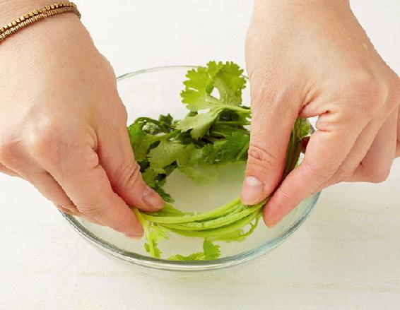
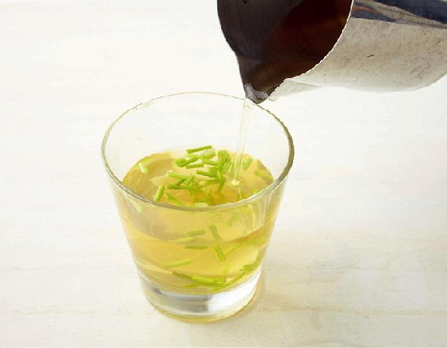
- 煮姜汤要注意，姜要去皮，才能起到发汗的效果。
- 生姜不要久煮，水开后下锅，煮3分钟就好。煮的时间长了，姜发散风寒的效果就差了。如果是暖胃、祛胃寒，姜就可以多煮一会儿。
- 我经常出差，劳累，抵抗力低下，一不小心就感冒了。去菜市场买了一小块姜和一小把香菜，借了酒店的锅子煮开一锅，在房间喝了就睡了。捂紧被子发了一身汗，第二天起床一身轻松，像是没有感冒过一样。头痛、怕冷、流鼻涕的症状都消失了。
——23群读者
- 女儿浑身乏力，没胃口，还发冷，用老师的方法，陈皮、生姜、香菜煮水治好了。
——心怡
- 已经好多年了，无论哪个季节早上妈妈都会有清鼻涕，遇到季节性感冒，也特别容易感染，我就让她喝这个水。喝了两次，又咳嗽又吐痰，吐了好多痰，后来清鼻涕也不流了，现在身体好多了。书中太多好用的方子，说也说不完。
——读者朋友
- 香菜现在家里是少不了的，有一次孩子感冒发烧，单位食材欠缺，只有香菜和陈皮，就先做了一杯给孩子喝。没想到简单的食材搭配，效果却很惊人，连喝了两大杯，孩子的精神好多了！
——海燕
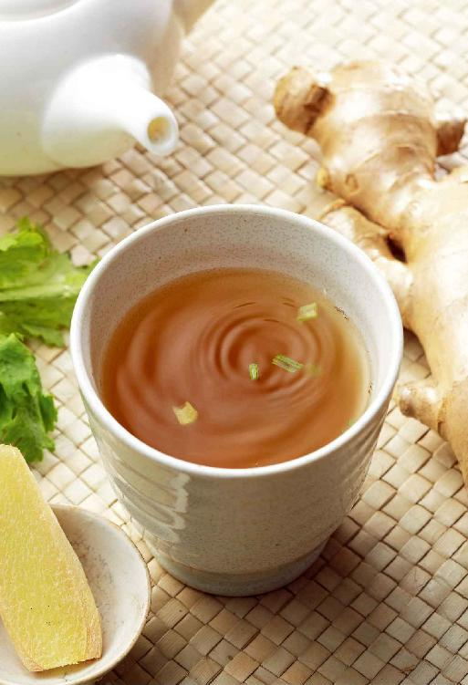
受风寒后预防感冒：旅途中受风寒，突然头痛、胃部冷痛，餐馆里要一杯胡椒糖茶
在家调理感冒不难，出差或旅行时则不太方便。如果外出时感受了风寒，不要硬扛着，可以因地制宜，用手边能找到的材料及时调理，防止感冒。
胡椒糖茶
【原料】
白胡椒粉1/4勺、红糖适量。
【做法】
将白胡椒粉和红糖放入杯中，冲入沸水，搅匀，闷2分钟后饮用。
【功效】
温胃祛寒，调理胃部受寒后冷痛、腹泻。
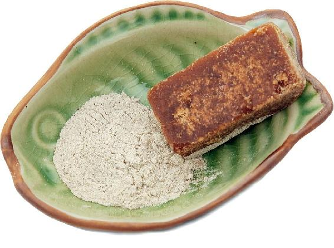
胡椒粉是每家餐馆必备的调料，很多餐馆还会直接放在桌面上供客人随意取用。如果受寒，吃饭时顺便用它来泡水，预防感冒再方便不过了。
读者评论
- 有一次我在外面着了凉，回家路上一直想着用桂圆壳煮水，回家后太阳穴胀得很痛，等不及桂圆壳煮水了，直接用了出差救急方胡椒粉红糖水，边喝边在心里嘀咕，要是没用怎么办。结果刚喝完，我一站起来就不痛了，把自己给惊着了，呆呆地站在那儿想，这是不是幻觉。
——琴
- 胡椒糖茶和菊花绿茶已经成为我每次出门行李中的必备品了。以前会备些感冒药，现在不论在家还是出门，再也不怕感冒啦，备着这些又安心又放心。感恩老师。
——ggsinging
- 肠胃受凉就会腹泻、腹痛，喝胡椒糖茶立竿见影！！
——南希
- 夜里空调温度开得有点低，早起头疼，有点畏寒，没起床，用热盐袋捂了半个小时后背，没出汗，头还是疼得厉害。又翻了老师的书，感觉胡椒红糖茶比较省事，又符合我的症状，立马喝了半碗，微微地出了汗，慢慢头就不疼了，没到中午就完全好了。有老师的书在手，小病小灾的就不怕了。
——43群读者
- 昨晚泡脚后不小心吹到风了，今天早上就流清鼻涕。用烧开的米酒冲胡椒、红糖喝下去，出汗后缓解很多。中午上床睡了一个小时，下午就好了。
——阿凤
- 今天小朋友感冒发烧，但是无汗，喝了胡椒红糖水，马上发汗，体温就降下来了。
——琳
这是一款方便且随时随地可用的方子，只需要一些姜、醋和糖就能自制抗感冒的茶饮了。
姜醋抗病饮
【原料】
带皮生姜3片、米醋1汤匙、红糖适量。
【做法】
生姜不要去皮，切3大片。和米醋、红糖一起放入随身杯，冲入沸水，闷5分钟后饮用。
【功效】
预防流感，抗病毒，增强抵抗力。
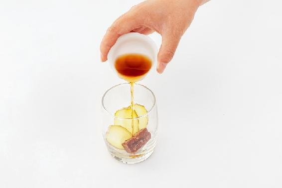
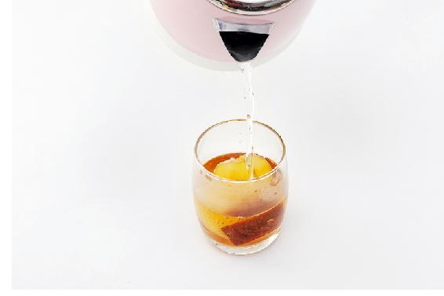
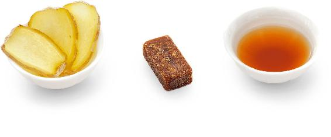
- 红糖是温性的，热性体质的人要慎用，吃多了容易生湿热。
- 小孩子不适宜多吃红糖。
有些朋友经常遇到突发的应酬，在没有准备的情况下饮酒。我教给他们用水果自制应急解酒茶的方法，朋友们用了以后都觉得很方便。
在身边没有现成解酒茶包的情况下，向餐厅要几个水果，就可以自制水果解酒茶了。
盐橘解酒茶
【原料】
新鲜橘子2个、食盐4克。
【做法】
- 首先把橘皮清洗干净（简易清洗法：把橘子放入茶杯里，倒入餐厅提供的热茶水，浸泡10分钟，再用热茶水冲淋一遍）。
- 用一半的食盐撒在橘子表皮上轻轻揉搓半分钟，冲洗一下，然后剥下橘皮。
- 把橘皮放到空杯子里，加入另一半盐，冲入沸水，闷10分钟后饮用。可以冲泡两次。
【功效】
- 开胃，化痰，通便，预防感冒。
- 饮酒前后喝都有解酒的作用，对喝啤酒醉酒特别有效，可以防止啤酒寒凉伤胃。
- 消除喝酒后的口腔异味。
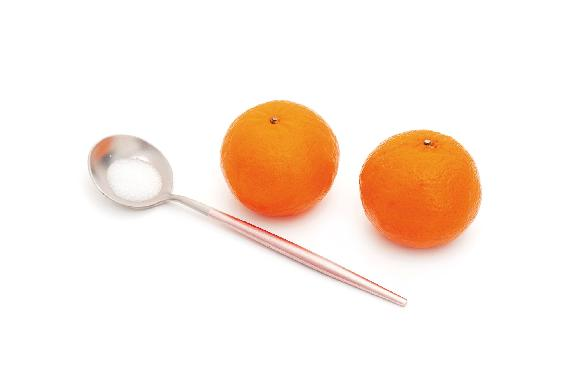
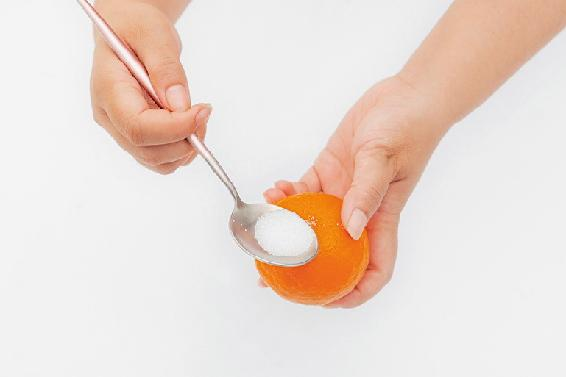
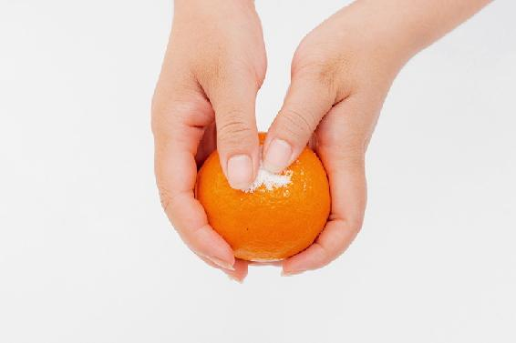
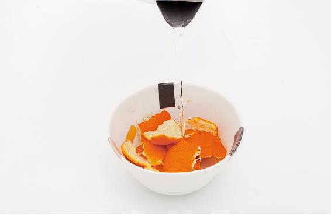
如果能向餐厅的厨房要些面粉，最好把橘子皮用加面粉的清水泡10分钟，再清洗干净。
读者评论
试用过一次这个方子。因为我不会喝酒，聚会又不得不喝，所以提前喝了老师的小茶方。平时啤酒两杯倒的我，这次竟然还可以清醒着自己回家，第二天胃也没有那么难受。分享给亲戚朋友后，都说很管用。
——15群读者
喝酒后当晚或者第二天，有的人会觉得肠胃不舒服，恶心、没有食欲，如果在家，可以做一碟糖醋萝卜来调理。如果在旅途中没有条件，那么用一个苹果，也可以随手自制一杯醒酒茶。
有些水果寒凉伤胃，而苹果却是养脾胃的。苹果能调和脾胃功能，既开胃，提升消化功能，促进营养吸收，又能降血脂，帮助身体排出毒素。
苹果醒酒茶
【原料】
新鲜苹果1个、蜂蜜适量。
【做法】
- 苹果用加过面粉的清水泡洗10分钟。
- 连皮带核切成小丁，用开水壶煮开。
- 加适量蜂蜜饮用，连同苹果一起吃掉。
【功效】
- 醒酒，缓解酒后恶心不适、食欲减退。
- 生津止渴，消除腹胀。
- 滋养皮肤。
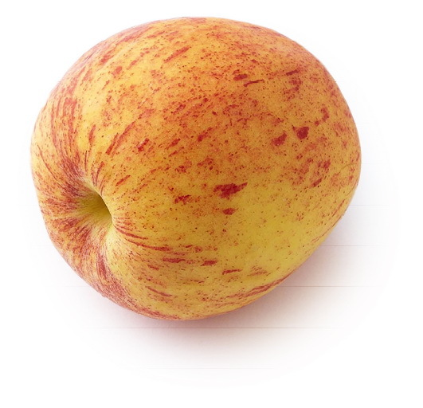
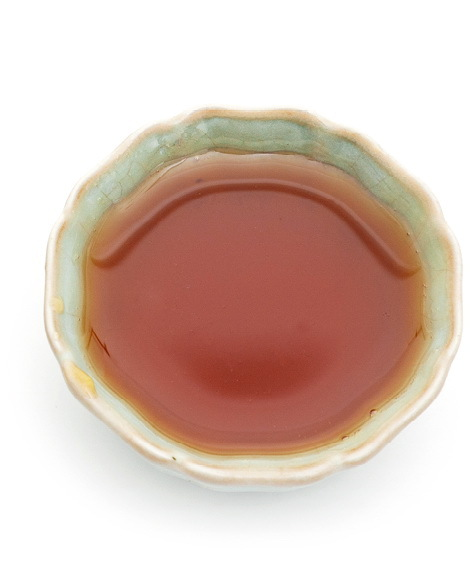
读者评论
- 《茶包小偏方，喝出大健康》这本书很实用。记得我家孩子高三时，有次我给她做了甜酒煮鸡蛋，当时头昏不舒服，在家睡了一天。我反复查阅了这本书，猜测可能是吃甜酒醉酒，试着用了苹果醒酒茶方。没想到一杯苹果水喝下去，立竿见影，孩子高兴地告诉我，头昏不适感立马消失了，能够学习了。老师的茶方的确使人心悦诚服。
——枫
- 没喝之前一直在吐，头晕头疼；喝完之后出了一身汗，精神立刻好起来，现在清醒了。
——22群读者